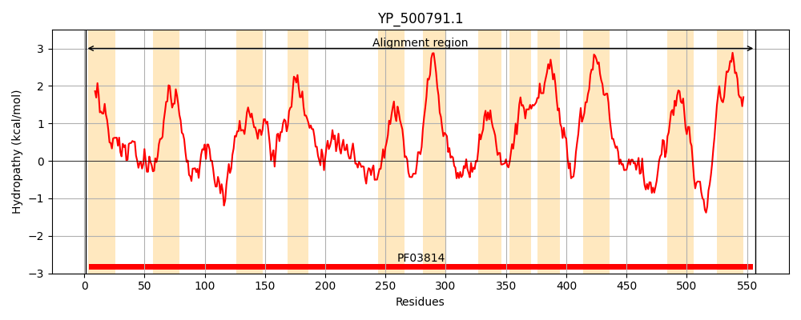
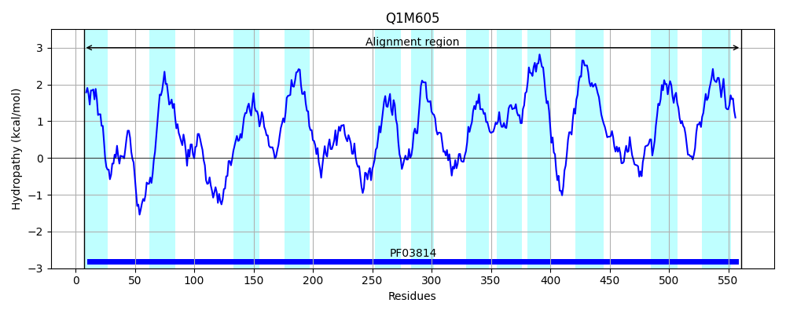
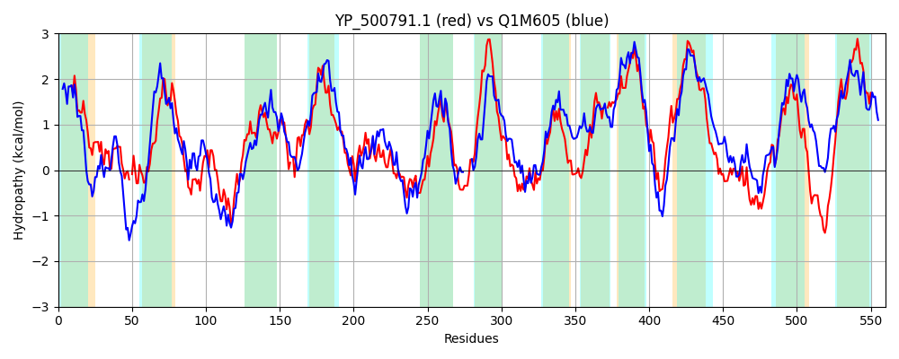

Hit Accession: Q1M605
Hit TCID: 3.A.3.7.2
Hit Description: gnl|BL_ORD_ID|13030 gnl|TC-DB|Q1M605|3.A.3.7.2 Potassium-transporting ATPase A chain OS=Rhizobium leguminosarum bv. viciae (strain 3841) GN=kdpA PE=3 SV=1
Mach Len: 560
e:0.000000
Query TMS Count : 12
Hit TMS Count: 12
TMS-Overlap Score: 11.600000
Predicted Substrates:CHEBI:26216;potassium atom
BLAST Alignment:
Score: 1034 , Bit scores: 402 bits, E-value: 1.3e-134, Alignment length: 560, Percentage identity: 41
Query: 1 MEIILFLTMMVMITYVFSGYLYRVALVQSSRVDLIFTRFENMCFKIIGT-DLEHMSAKTYVKHFLAFNGFMGFITFVLLIVQQWLFLNPNHNLNQSIDLAFNTAISFLTNSNLQHYNGESDVTYLTQMIVMTYLMFTSSASGYAVCIAMLRRLTGLTN-IIGNFYQDIVRFIVRVLLPLSCLISILLMTQGVPQTLHANLMIRTLSGHIQHIAFGPIASLESIKHLGTNGGGFLAGNSATPFENPNIWSNFIEMGSMMLLPMSMLFLFGRMLSRHGKRVHRHALILFVAMFFIFIAILTLTMWSEYRGNPILANLGIYGPNMEGKEVRFGAGLSALFTVITTAFTTGSVNNMHDSLTPIGGLGPMVLMMLN-VVFGGEGVGLMNLLIFVLLTVFICSLMVGKTPEYLNMPIGAREMKCIVLVFLIHPILILVFSALAFMIPGASESITNPSFHGISQVMYEMTSAAANNGSGFEGLKDDTTFWNISTGIIMLLSRYIPIILQLMIASSLVNKKSYHQDKYTIAIDKPYFGVSLIVFIVLLSGLTFIPVLLLGPIGEFLTL 557
++I+L+ +++++ GY+ RV + + + + E ++I GT + E +Y L FN + + LL Q L NP +L+FNTA+SF TN+N Q+Y GES ++YLTQM T F S+A+G A+ +A +R + IGNF+ D++R +LLP+ +++I+ + GVPQTL + TL G Q IA GP+AS +IK LGTNGGGF NSA PFENP+ SN I+M S+ + ++ +FGRM+ R + M +F+A + +T W+E GNP++ G+ G NMEGKEVRFG +S+LF VITTA + G+VN MH S T +GGL P++ M L ++ GG G G +L+F+++ VF+ LMVG+TPEYL I A+EMK VL L P+ +LVF+A+A ++P A SI HG S+++Y TSAAANNGS F GL +T ++NI+ GI ML R++ II L IA SL+ KK+ T D P F L+ I+++ GLTF P L LGP+ E L +
Sbjct: 7 LQILLYCGIVLVLVKPLGGYMTRVYNGERTFLSPVLVPIERGLYRIAGTSEREEQHWTSYAFAMLMFNLLGVLVLYALLRFQDILPYNPAGMAAVPPELSFNTAVSFPTNTNWQNYGGESTMSYLTQMAGFTVQNFLSAATGMAIAVAFIRAFARASGKAIGNFWVDMIRGTFYILLPICIVLTIVYVYLGVPQTLGPYVNATTLEGAQQTIAVGPVASQLAIKMLGTNGGGFFNANSAHPFENPDAISNLIQMVSIFAIGAALTNVFGRMVGNQ-----RQGWAILATMGVLFVAGVIVTYWAEAAGNPLMHAFGLGGGNMEGKEVRFGVAMSSLFAVITTAASCGAVNAMHGSFTALGGLIPLINMQLGEIIVGGVGAGFYGILLFIIVAVFVAGLMVGRTPEYLGKKIEAKEMKMAVLAILCLPLAMLVFTAIATVLPSAVASIGTAGPHGFSEILYAYTSAAANNGSAFGGLTGNTPWYNITLGIGMLAGRFLVIIPALAIAGSLIAKKTVPASAGTFPTDGPLFVGLLVGTILIVGGLTFFPALALGPVVEHLVM 561 | Protein Hydropathy Plots: |
|---|
|  |  |
Pairwise Alignment-Hydropathy Plot:
|
|---|
|  |